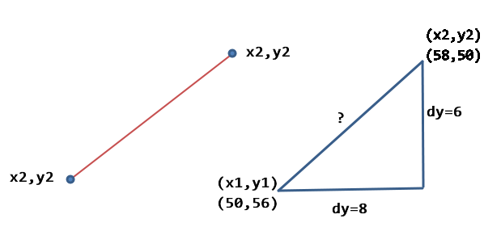

勾三股四弦五，是的，接下来三角形的勾股定理，它能很方便的计算边长，计算公式相信大家都知道：A的平方 + B的平方 = C的平方。
但是这个勾股定理在计算机动画里面有什么用呢？其实计算两点之间的距离我们就可以运用勾股定理，观察下面的图形

根据勾股定理，我们可以直接套公式
var dx = x2 - x1; var dy = y2 - y1;var dist = Math.sqrt(dx*dx + dy*dy);
计算两点的距离